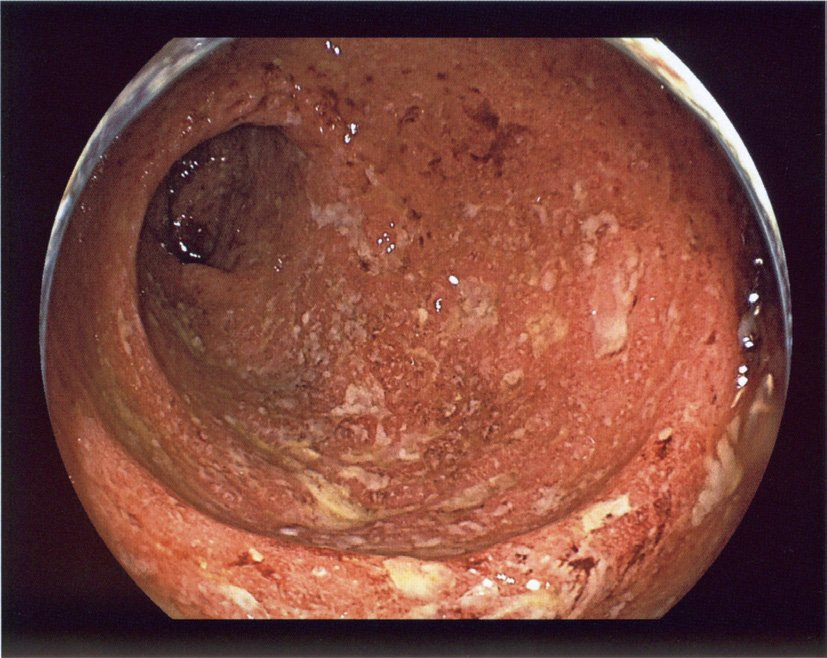
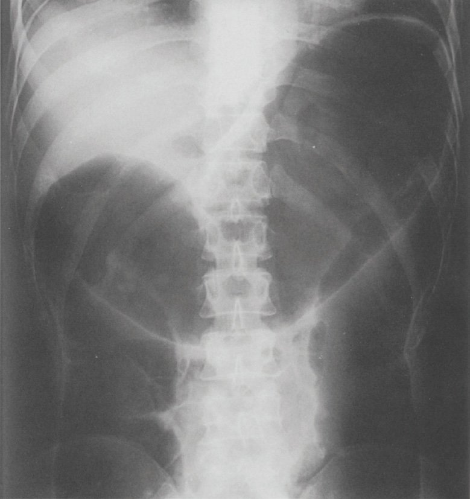
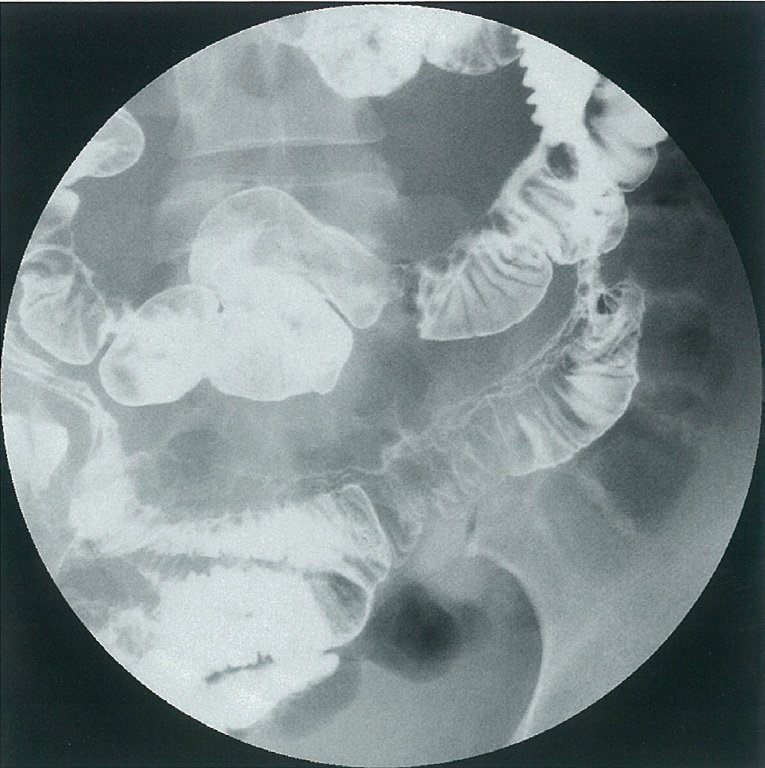
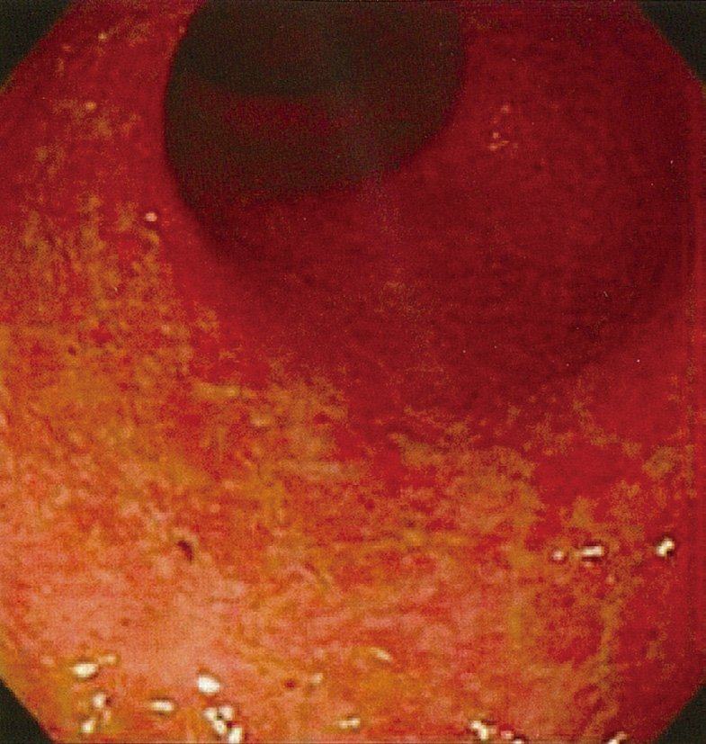

| 分類 | 薬剤 | 特徴 |
|---|---|---|
| 分類 | 薬剤 | 特徴 |
| 浸透圧性下剤 | 酸化Mg・ラクツロース・PEG | 腸管内に水分引き込み |
| 大腸刺激性下剤 | センナ・ビサコジル | 依存性あり・長期使用不可 |
| 上皮機能変容薬 | ルビプロストン・リナクロチド | 腸液分泌↑ |
| 食物繊維 | 野菜・穀物・海藻 | 便量↑・腸蠕動促進 |
| 重症度 | 治療薬 |
|---|---|
| 重症度 | 治療薬 |
| 軽症 | 5-ASA（メサラジン） |
| 中等症 | 5-ASA ＋ ステロイド（局所/全身） |
| 重症 | ステロイド全身投与（PSL 40〜60mg） |
| 難治・ステロイド抵抗性 | タクロリムス・シクロスポリン・抗TNF-α抗体 |
| 外科 | 大腸全摘＋回腸嚢肛門吻合術（IPAA） |
| 所見 | 潰瘍性大腸炎 | Crohn病 |
|---|---|---|
| 所見 | 潰瘍性大腸炎 | Crohn病 |
| 病変分布 | 連続性（直腸から口側へ） | 非連続性（skip lesion） |
| 好発部位 | 大腸（直腸必発） | 回腸末端〜全消化管（口〜肛門） |
| 潰瘍の方向 | 浅い炎症 | 縦走潰瘍 |
| 内視鏡像 | 血管透見像消失・びらん | 敷石像（cobblestone） |
| 壁深達度 | 粘膜〜粘膜下層 | 全層性炎症（transmural） |
| 肛門病変 | 稀 | 難治性痔瘻（高頻度） |
| 病理 | 陰窩膿瘍・杯細胞減少 | 非乾酪性肉芽腫 |
| 分類 | 症状 | 治療 |
|---|---|---|
| 分類（Rome IV） | 症状 | 治療 |
| 心窩部痛症候群（EPS） | 心窩部痛・灼熱感 | 酸分泌抑制薬（PPI） |
| 食後愁訴症候群（PDS） | 食後膨満感・早期満腹感 | 消化管運動調節薬（アコチアミド） |
| 症候 | 正しい疾患 | 出題の組み合わせ |
|---|---|---|
| 症候 | 正しい疾患 | 出題の組み合わせ |
| 嚥下障害 | 食道疾患・神経筋疾患 | 膵炎は誤り（a） |
| 黄疸 | 肝・胆道疾患 | 腸閉塞は誤り（b） |
| 吐血 | 上部消化管疾患 | 潰瘍性大腸炎は下血（c） |
| 腹部膨隆 | 腸閉塞・腹水・肥満 | 胃食道逆流症は誤り（d） |
| 便通異常 | 過敏性腸症候群 | 正しい（e）✅ |

| 病理所見 | 潰瘍性大腸炎 | Crohn病 |
|---|---|---|
| 病理所見 | 潰瘍性大腸炎 | Crohn病 |
| 陰窩膿瘍 | 特徴的（高頻度） | 少ない |
| 非乾酪性肉芽腫 | 通常なし | 特徴的（非乾酪性） |
| 炎症の深達度 | 粘膜〜粘膜下層 | 全層性 |
| 杯細胞 | 減少 | 比較的保たれる |
| 組み合わせ | 正誤 | 説明 |
|---|---|---|
| 組み合わせ | 正誤 | 説明 |
| Crohn病＋痔瘻 | ✅ 正しい（a） | Crohn病の肛門病変（難治性痔瘻は特徴的） |
| 偽膜性腸炎＋肝膿瘍 | ❌ 誤り（b）正答 | CDIの合併症：毒性巨大結腸・穿孔（肝膿瘍はアメーバ赤痢） |
| Meckel憩室＋イレウス | ✅ 正しい（c） | Meckel憩室→腸重積・腸軸捻転→イレウス |
| 潰瘍性大腸炎＋中毒性巨大結腸症 | ✅ 正しい（d） | UC重症化→toxic megacolon→緊急手術適応 |
| 虚血性大腸炎＋大腸穿孔 | ✅ 正しい（e） | 虚血→粘膜壊死→穿孔（重篤合併症） |

| 項目 | 内容 |
|---|---|
| 項目 | 内容 |
| 定義 | 大腸径≥6cm＋全身炎症反応（UC・Crohn病・CDI等で発生） |
| 禁忌 | 抗コリン薬・モルヒネ・止痢薬・NSAIDs・注腸造影 |
| 内科治療 | 絶飲食・ステロイド・広域抗菌薬・TPN・体位変換 |
| 手術適応 | 72時間で改善なし・穿孔・出血→緊急大腸全摘術 |
| 部位 | 合併症 |
|---|---|
| 部位 | 合併症 |
| 口腔 | アフタ性潰瘍（Crohn病の特徴的所見） |
| 皮膚 | 結節性紅斑・壊疽性膿皮症 |
| 関節 | 末梢関節炎・仙腸関節炎 |
| 眼 | ぶどう膜炎・上強膜炎 |
| 肝・胆道 | 原発性硬化性胆管炎（PSC）（特にUC） |
| 肛門 | 難治性痔瘻（Crohn病に特徴的） |
| 項目 | 特徴 |
|---|---|
| 項目 | 特徴 |
| 内視鏡 | 敷石像・縦走潰瘍・非連続性（skip lesion） |
| 合併症 | 小腸狭窄・腸閉塞・瘻孔・難治性痔瘻 |
| 病理 | 全層性炎症・非乾酪性肉芽腫 |
| 栄養 | 成分栄養剤が有効（腸管安静） |
| 疾患 | 腹痛軽快因子 | 腹痛悪化因子 |
|---|---|---|
| 疾患 | 腹痛軽快因子 | 腹痛悪化因子 |
| 過敏性腸症候群（正答e） | 排便で軽快 | ストレス・食事 |
| 胆石症（誤りa） | 絶食（脂肪制限） | 脂肪摂取（悪化） |
| 慢性膵炎（誤りb） | 絶食・前屈位 | 飲酒（悪化） |
| 十二指腸潰瘍（誤りc） | 食事摂取・制酸薬 | 絶食時に悪化（空腹時痛） |
| 汎発性腹膜炎（誤りd） | 安静 | 体動（振動で悪化） |
| 所見 | 潰瘍性大腸炎 | Crohn病 |
|---|---|---|
| 所見 | 潰瘍性大腸炎 | Crohn病 |
| 連続性炎症（正答d） | ✅ 直腸から口側へ連続 | ✗ 非連続性（skip lesion） |
| 血管透見像消失（正答e） | ✅ 最も早期の変化 | 粘膜浮腫で見えにくいことあり |
| 偽膜（誤りa） | ✗ CDI（偽膜性腸炎） | まれ |
| 敷石像（誤りb） | ✗ Crohn病の特徴 | ✅ Crohn病に特徴的 |
| 輪状潰瘍（誤りc） | ✗ 腸結核の特徴 |

| 所見 | 特徴 |
|---|---|
| 所見 | 特徴 |
| a敷石像（正答） | 縦走潰瘍と横走潰瘍が交差→cobblestone appearance |
| d非連続性病変（正答） | Skip lesion：正常粘膜を挟んで断続的に病変 |
| b偽膜形成（誤り） | CDI（偽膜性腸炎）の所見→Crohn病ではない |
| c輪状潰瘍（誤り） | 腸結核の所見→Crohn病ではない |
| e血管透見像消失（誤り） | 潰瘍性大腸炎の所見→Crohn病ではない |
| 疾患 | 内視鏡所見 | 正誤 |
|---|---|---|
| 疾患 | 内視鏡所見 | 正誤 |
| 腸結核（正答a） | 輪状潰瘍（腸管軸に垂直な横走潰瘍） | ✅ |
| Crohn病（正答b） | 敷石像（cobblestone appearance） | ✅ |
| 薬物性腸炎（誤りc） | 多様（縦走潰瘍もあるが特徴的でない） | ✗縦走潰瘍は虚血性大腸炎・Crohn病 |
| 虚血性腸炎（誤りd） | 縦走潰瘍・左側大腸 | ✗偽膜形成はCDI |
| 潰瘍性大腸炎（誤りe） | 連続性炎症・血管透見像消失 | ✗非連続性はCrohn病 |

| 疾患 | 吸収障害 | 機序 |
|---|---|---|
| 疾患 | 吸収障害 | 機序 |
| 空腸切除（誤りa） | →葉酸・鉄（ビタミンB12は回腸末端） | ✗B12は回腸末端 |
| 回盲部切除（誤りb） | →ビタミンB12・胆汁酸（鉄は空腸） | ✗鉄は空腸吸収 |
| Crohn病（正答c） | 胆汁酸の再吸収障害 | 回腸末端の炎症・切除→胆汁酸回収↓ |
| 潰瘍性大腸炎（誤りd） | Na/水の再吸収↓（アミノ酸は空腸） | ✗アミノ酸は小腸 |
| 慢性膵炎（正答e） | 脂肪吸収障害（脂肪便） | 膵リパーゼ分泌↓→脂肪分解不全 |
| 便秘をきたす疾患 | 下痢をきたす疾患 |
|---|---|
| 便秘をきたす疾患 | 下痢をきたす疾患 |
| 肝硬変・Parkinson病 | IBS-D・過敏性腸症候群 |
| 甲状腺機能低下症（粘液水腫） | 甲状腺機能亢進症（バセドウ病） |
| 強皮症（消化管） | 感染性腸炎・CDI |
| 機能性便秘 | 短腸症候群・慢性膵炎 |